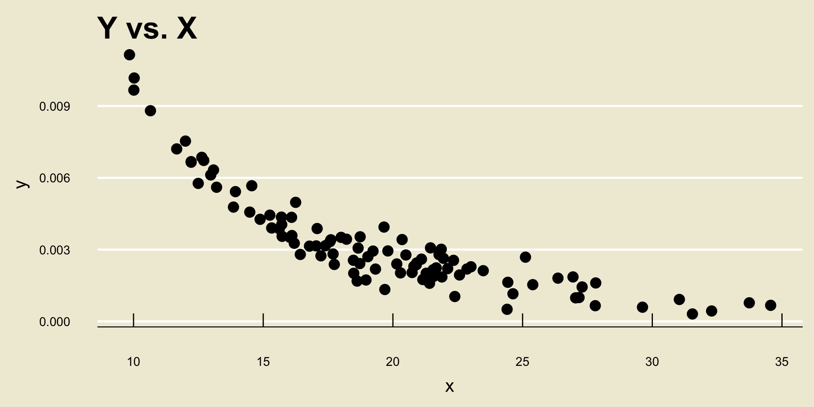
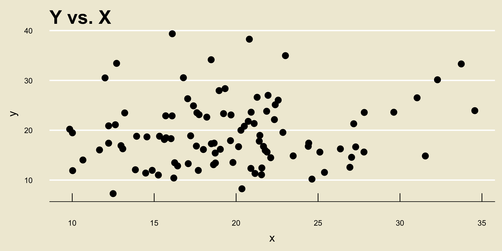
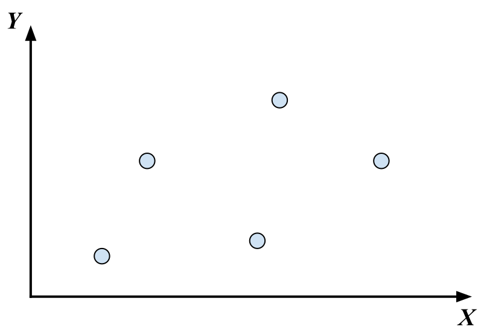
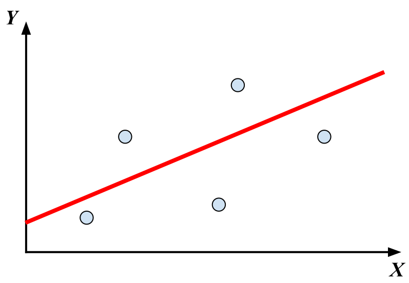
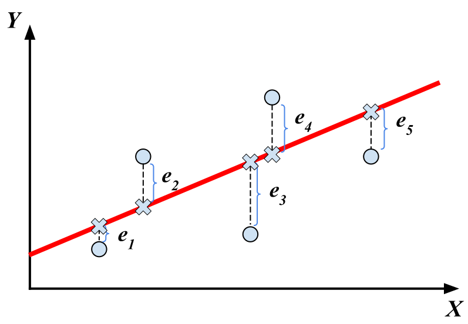

PSTAT 5A: Lecture 20
Intro to Statistical Modeling, and Correlation
Mallory Wang
2024-07-18
Where We Have Been
Taking Stock
Let’s start off today’s lecture by taking stock of what we’ve done in this class so far.
We started off by talking about descriptive statistics, which seems to describe data.
- These descriptions can be visual (e.g. boxplots, scatterplots, etc.) or numerical (e.g. measures of central tendency, measures of spread, etc.)
Next, we talked about probability, which sought to give us a framework with which to discuss randomness.
- Key notions include: random variables, and distributions (e.g. uniform, normal, etc.)
Taking Stock
After that, we spent a few weeks talking about inference.
This refers to the situation in which we have a population governed by a parameter, and we wish to take samples from this population and use these samples to make inferences about the population parameter.
We also discussed how to compare population means across multiple populations, using two-sample t-tests and ANOVA.
Scatterplots and Trends
Let’s take a moment to revisit some material from Lecture 2.
Specifically, suppose we have data of the form \(\{(y_i, \ x_i)\}_{i=1}^{n}\).
- For simplicity’s sake, let’s assume both
xandyare numerical.
- For simplicity’s sake, let’s assume both
We have previously seen that the best way to visualize the relationship between
yandxis with a scatterplot
- Linear Negative Association:
- Nonlinear Negative Association:

- Linear Positive Association:

- Nonlinear Positive Association:

No Relationship
- Sometimes, two variables will have no relationship at all:

Statistical Modeling
The goal of statistical modeling, loosely speaking, is to try and model the relationship between
xandy.Specifically, we assume the relationship takes the form \[ \texttt{y} = f(\texttt{x}) + \texttt{noise} \] where \(f()\) is some function (e.g. linear, nonlinear, etc.)
Hang on, what’s the
noiseterm doing?Well, take a look at the previous scatterplots. Even though many of these display (what we visually would describe as) relationships between
xandy, the datapoints do not fall perfectly along a single curve.
Statistical Modeling
As a concrete example, suppose
yrepresentsweightandxrepresentsheight.We do believe there would be some sort of a positive association between
weightandheight(taller people tend to, in general, weigh more) and we may even assume the relationship is linear.However, just because we know someone’s height, we don’t exactly know what their weight will be.
- Again, this is because there is uncertainty and randomness inherent in pretty much everything!
Terminology
Alright, so: given variables
yandx, we assume the relationship between them can be modeled as \[ \texttt{y} = f(\texttt{x}) + \texttt{noise} \]Here is some terminology we use:
yis referred to as the response variable, or sometimes the dependent variable.xis referred to as the explanatory variable, or sometimes the independent variable.- The function \(f()\) is sometimes referred to as the signal function.
Terminology
We also have some additional terminology about the entire model, based on the type of the response variable.
If
yis numerical, we call the resulting model a regression model (or we just say we are in a regression setting)If
yis categorical, we call the resulting model a classification model (or we just say we are in a classification setting)
So, for example, trying to model the relationship between
weightandheight(assumingweightis our response variable) is a regression problem, sinceweightis a numerical variable.
Classification Problem
As an illustration of a classic classification problem, suppose we have access to a roster of passengers on the Titanic.
- For those who don’t know, the RMS Titanic was a British passenger line that crahsed into an iceberg on April 15, 1912.
Tragically, not all passengers survived.
One question we may want to ask is: how did various factors (e.g. class, gender, etc.) affect whether or not a given passenger survived?
- For instance, since women and children boarded lifeboats first, it may be plausible surmise that women and children had a higher likelihood of surviving.
Classification Problem
Notice how here, the response variable (i.e. whether or not someone survived) is a binary variable; that is, it takes only one of two values (
survivedordid not survive). As such, this is a classification problem.I should note: perhaps confusingly, a problem in which the response is binary is sometimes called logistic regression.
But, that is a bit of a misnomer- it is technically a classification problem, since the response variable is categorical.
By the way, there is an actual dataset on the Titanic at https://www.kaggle.com/competitions/titanic
Again, we won’t have a chance to talk about logistic regression in this class- for that, I refer you to a Machine Learning class like PSTAT 131/231!
Multivariate Models
We don’t have to restrict ourselves to modeling the relationship between a response variable and a single explanatory variable.
For example, suppose
ymeasures income.There are several factors that might contribute to someone’s monthly income: things like
education_level,gender,industry, etc.
We can easily adapt a linear regression model to allow for multiple explanatory variables, which leads to what is known as a multivariate regression/classification model: \[ \texttt{y} = f(\texttt{x}_1, \ \cdots , \ \texttt{x}_k) + \texttt{noise} \]
- A full treatment of multivariate models requires linear alebra, so I refer you to a course like PSTAT 126 or PSTAT 131/231 for further details.
Linear Models
For now, let’s focus on modeling the relationship between a numerical response variable and a single numerical explanatory variable: \[ \texttt{y} = f(\texttt{x}) + \texttt{noise} \]
Of particular interest to statisticians are the class of linear models, which assume a linear form for the signal function.
Recall that a line is described by two parameters: an intercept and a slope. As such, to say we are assuming a “linear form” for \(f()\) is to say we are assuming \(f(x) = \beta_0 + \beta_1 \cdot x\), so our model becomes \[ \texttt{y} = \beta_0 + \beta_1 \cdot \texttt{x} + \texttt{noise} \]
Strength of a Relationship
Now, before we delve into the mathematics and mechanics of model fitting, there is another thing we should be aware of.
As an example, consider the following two scatterplots:


- Both scatterplots display a positive linear trend. However, the relationship between
Y2andX2seems to be “stronger” than the relationship betweenY1andX1, does it not?
Correlation Coefficient
Ultimately, we would like to develop a mathematical metric to quantify not only the relationship between two variables, but also the strength of the relationship between these two variables.
This quantity is referred to as the correlation coefficient.
Now, it turns out there are actually a few different correlation coefficients out there. The one we will use in this class (and one of the metrics that is very widely used by statisticians) is called Pearson’s Correlation Coefficient, or often just Pearson’s r (as we use the letter r to denote it.)
Pearson’s r
Given two sets \(X = \{y_i\}_{i=1}^{n}\) and \(Y = \{y_i\}_{i=1}^{n}\) (note that we require the two sets to have the same number of elements!), we compute r using the formula \[ r = \frac{1}{n - 1} \sum_{i=1}^{n} \left( \frac{x_i - \overline{x}}{s_X} \right) \left( \frac{y_i - \overline{y}}{s_Y} \right) \] where:
- \(\overline{x}\) and \(\overline{y}\) denote the sample means of \(X\) and \(Y\), respectively
- \(s_X\) and \(s_Y\) denote the sample standard deviations of \(X\) and \(Y\), respectively.
Example
I find it useful to sometimes consider extreme cases, and ensure that the math matches up with our intuition.
For example, consider the sets \(X = \{1, 2, 3\}\) and \(Y = \{1, 2, 3\}\).
From a scatterplot, I think we would all agree that \(X\) and \(Y\) have a positive linear relationship, and that the relationship is very strong!
Example
Indeed, \(\overline{x} = 2 = \overline{y}\) and \(s_X = 1 = s_Y\), meaning \[\begin{align*} r & = \frac{1}{3 - 1} \left[ \left( \frac{1 - 2}{1} \right) \left( \frac{1 - 2}{1} \right) + \left( \frac{2 - 2}{1} \right) \left( \frac{2 - 2}{1} \right) \right. \\ & \hspace{45mm} \left. + \left( \frac{3 - 2}{1} \right) \left( \frac{3 - 2}{1} \right) \right] \\ & = \frac{1}{2} \left[ 1 + 0 + 1 \right] = \boxed{1} \end{align*}\]
It turns out, r will always be between \(-1\) and \(1\), inclusive, regardless of what two sets we are comparing!
Interpretation
So, here is how we interpret the value of r.
The sign of r (i.e. whether it is positive or negative) indicates whether or not the linear association between the two variables is positive or negative.
The magnitude of r indicates how strong the linear relationship between the two variables is, with magnitudes close to \(1\) or \(-1\) indicating very strong linear relationships.
An r value of 0 indicates no linear relationship between the variables.
Important Distinction
Now, something that is very important to mention is that r only quantifies linear relationships- it is very bad at quantifying nonlinear relationships.
For example, consider the following scatterplot:
Important Distinction
I think we would all agree that
YandXhave a fairly strong relationship.However, the correlation between
YandXis actually only 0.1953333!So, again- r should only be used as a determination of the strength of linear trends, not nonlinear trends.
Your Turn!
Your Turn!
Exercise 1
Compute the correlation between the following two sets of numbers: \[\begin{align*} \boldsymbol{x} & = \{-1, \ 0, \ 1\} \\ \boldsymbol{y} & = \{1, \ 2, \ 0\} \end{align*}\]
Leadup
There is another thing to note about correlation.
Let’s see this by way of an example: consider the following two scatterplots:
- Both cor(
X,Y1) and cor(X,Y2) are equal to 1, despite the fact that a one unit increase inxcorresponds to a different unit increase iny1as opposed toy2.
Leadup
So, don’t be fooled- the magnitude of r says nothing about how a one-unit increase in
xtranslates to a change iny!- Again, the magnitude of r only tells us how strongly the two variables are related.
To figure out exactly how a change in
xtranslates to a change iny, we need to return to our model.
Regression, Part I
Regression Problem
- As a concrete example, let’s examine a dataset that contains several measurements on heights and weights:
Regression Model
Letting
ydenote our response variable (weight) andxdenote our explanatory variable (height), our model is \[ \texttt{y} = \beta_0 + \beta_1 \cdot \texttt{x} + \texttt{noise} \]- If you wanted to be a little more explicit, you could also write \[ \texttt{weight} = \beta_0 + \beta_1 \cdot (\texttt{height}) + \texttt{noise} \]
Ultimately, we would like to know the values of \(\beta_0\) and \(\beta_1\).
However, we will never be able to determine their values exactly!
Why? Well, take a look at the model again- though we are assuming a linear relationship between
heightandweight, ourweightobservations contain some noise, the magnitude of which we never get to see!- In this way, we can think of \(\beta_0\) and \(\beta_1\) as population parameters.
Fitting the Model
Our goal, therefore, is to try and determine good estimators \(\widehat{\beta}_0\) and \(\widehat{\beta}_1\) of \(\beta_0\) and \(\beta_1\), respectively.
In the more general setting, given a model \[ \texttt{y} = f(\texttt{x}) + \texttt{noise} \] the goal of model fitting is to take data \(\{(y_i, \ x_i)\}_{i=1}^{n}\) and use it to construct a function \(\widehat{f}()\) that we believe best approximates the function \(f():\) \[ \widehat{\texttt{y}} = \widehat{f}(\texttt{x}) + \texttt{noise} \]
Height and Weight
- Okay, back to our height and weight example:

Height and Weight
The regression problem basically boils down to finding the line that best fits the data.
The specific line we will discuss in a bit is called the ordinary least squares line (or just OLS line):
Simple Linear Regression
Here is how simple linear regression works.
We are given observations \(\{(y_i, \ x_i)\}_{i=1}^{n}\) on a response variable
yand an explanatory variablex.In simple linear regression, we adopt the following model: \[ \texttt{y} = \beta_0 + \beta_1 \cdot \texttt{x} + \texttt{noise} \]
Our goal is to use the data \(\{(y_i, \ x_i)\}_{i=1}^{n}\) to determine suitable estimators for \(\beta_0\) and \(\beta_1\).
Simple Linear Regression
- Here’s a visual way of thinking about this. Consider the following scatterplot:

Goals
- We are assuming that there exists some true linear relationship (i.e. some “fit”) between
yandx. But, because of natural variability due to randomness, we cannot figure out exactly what the true relationship is.

Goals
- Finding the “best” estimate of the signal function is, therefore, akin to finding the line that “best” fits the data.

Line of Best Fit
Now, if we are to find the line that best fits the data, we first need to quantify what we mean by “best”.
Here is one idea: consider minimizing the average distance from the datapoints to the line.
As a measure of “average distance from the points to the line”, we will use the so-called residual sum of squares (often abbreviated as RSS).
Residuals
- The ith residual is defined to be the quantity \(e_i\) below:

- RSS is then just \(\displaystyle \mathrm{RSS} = \sum_{i=1}^{n} e_i^2\)
Results
It turns out, using a bit of Calculus, the estimators we seek (i.e. the ones that minimize the RSS) are \[\begin{align*} \widehat{\beta_1} & = \frac{\sum\limits_{i=1}^{n} (x_i - \overline{x})(y_i - \overline{y})}{\sum\limits_{i=1}^{n} (x_i - \overline{x})^2} \\ \widehat{\beta_0} & = \overline{y} - \widehat{\beta_1} \overline{x} \end{align*}\]
These are what are known as the ordinary least squares estimators of \(\beta_0\) and \(\beta_1\), and the line \(\widehat{\beta_0} + \widehat{\beta_1} x\) is called the ordinary least-squares regression line (or just OLS regression line, for short).
Perhaps an example may illustrate what I am talking about.
Example
Example
\(\widehat{\beta_0} =\) -0.2056061; \(\widehat{\beta_1} =\) -2.1049432.
I.e. the equation of the line in blue is -0.2056061 + -2.1049432 *
x.
Fitted Values
- Let’s return to our cartoon picture of OLS regression:
Fitted Values
- Notice that each point in our dataset (i.e. the blue points) have a corresponding point on the OLS regression line:

Fitted Values
These points are referred to as fitted values; the y-values of the fitted values are denoted as \(\widehat{y}_i\).
In this way, the OLS regression line is commonly written as a relationship between the fitted values and the x-values: \[ \widehat{y} = \widehat{\beta_0} + \widehat{\beta_1} x \]
Back to height and weight
- Before we work through the math once, let’s apply this technique to the height and weight data from before.

Back to height and weight
- Using a computer software, the OLS regression line can be found to be:
- Specifically, \(\widehat{\beta_0} =\) 3.366744 and \(\widehat{\beta_1} =\) 0.9790114
- We will return to the notion of fitted values in a bit.
Back to height and weight
A quick note:
Though there was no way to know this, the true \(\beta_1\) was actually \(1.0\). Again, this is just to demonstrate that the OLS estimate \(\widehat{\beta_1}\) is just that- an estimate!

\[ \widehat{\texttt{weight}} = 3.367 + 0.979 \cdot \texttt{height} \]
Worked-Out Example
Alright, let’s work through a computation by hand once.
Suppose we have the variables \[\begin{align*} \boldsymbol{x} & = \{3, \ 7, \ 8\} \\ \boldsymbol{y} & = \{20, \ 14, \ 17\} \end{align*}\] and suppose we wish to construct the least-squares regression line when regressing \(\boldsymbol{y}\) onto \(\boldsymbol{x}\).
First, we compute \[\begin{align*} \overline{x} & = 6 \\ \overline{y} & = 17 \end{align*}\]
Worked-Out Example
Next, we compute \[\begin{align*} \sum_{i=1}^{n} (x_i - \overline{x})^2 & = (3 - 6)^2 + (7 - 6)^2 + (8 - 6)^2 = 14 \\ \sum_{i=1}^{n} (y_i - \overline{y})^2 & = (20 - 17)^2 + (14 - 17)^2 + (17 - 17)^2 = 18 \end{align*}\]
Additionally, \[\begin{align*} \sum_{i=1}^{n} (x_i - \overline{x})(y_i - \overline{y}) & = (3 - 6)(20 - 17) + (7 - 6)(14 - 17) \\[-7mm] & \hspace{10mm} + (8 - 6)(17 - 17) \\[5mm] & = -12 \end{align*}\]
Worked-Out Example
Therefore, \[ \widehat{\beta_1} = \frac{\sum_{i=1}^{n} (x_i - \overline{x})(y_i - \overline{y})}{\sum_{i=1}^{n} (x_i - \overline{x})^2} = \frac{-12}{14} = - \frac{6}{7} \]
Additionally, \[ \widehat{\beta_0} = \overline{y} - \widehat{\beta_1} \overline{x} = 17 - \left( - \frac{6}{7} \right) (6) = \frac{155}{7} \]
This means that the ordinary least-squares regression line is \[ \boxed{\widehat{y} = \frac{1}{7} ( 155 - 6 x )} \]

\[ \widehat{y} = \frac{1}{7} ( 155 - 6 x ) \]
Interpreting the Coefficients
Alright, so how do we interpret the OLS regression line? \[\widehat{y} = \widehat{\beta_0} + \widehat{\beta_1} x\]
We can see that a one-unit increase in
xcorresponds to a \(\widehat{\beta_1}\)-unit increase iny.For example, in our
heightandweightexample we found \[ \widehat{\texttt{weight}} = 3.367 + 0.979 \cdot \texttt{height} \]This means that a one-cm change in height is associated with a (predicted/estimated) 0.979 lbs change in weight.
Next Time
- Next time, we’ll discuss how to use the OLS regression line to make predictions.